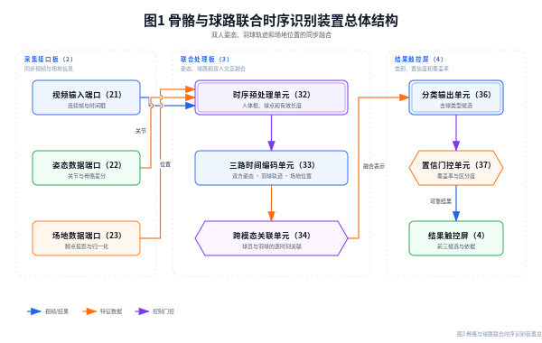
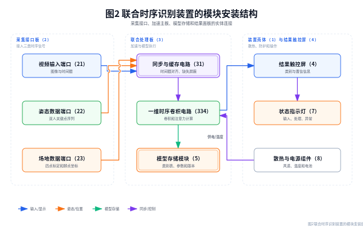
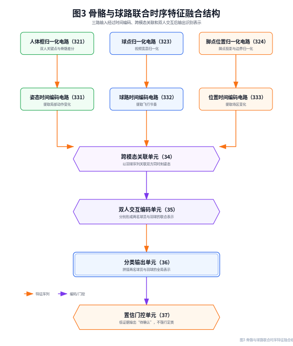
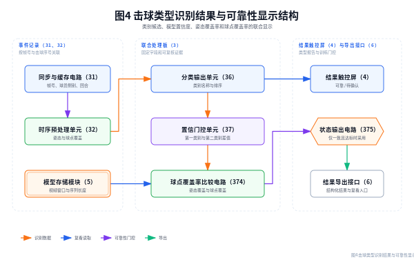

| 项目 | 内容 |
|---|---|
| 实用新型名称 | 一种基于骨骼与球路联合时序分析的羽毛球击球类型识别装置 |
| 申请人 | 【待填写】 |
| 设计人/发明人 | 【待填写】 |
| 申请人地址 | 【待填写】 |
| 联系人及联系方式 | 【待填写】 |
| 代理机构及代理师 | 【待填写】 |
| 申请日/优先权日 | 【待填写】 |
本实用新型涉及体育视频分析设备技术领域，公开一种基于骨骼与球路联合时序分析的羽毛球击球类型识别装置，包括采集接口板、同步与缓存电路、时序加速电路、模型存储模块、结果触控屏、状态指示灯以及散热与电源组件；采集接口板包括视频输入端口、姿态数据端口和场地数据端口，所述三个端口分别与同步与缓存电路电连接，同步与缓存电路与时序加速电路电连接，时序加速电路分别与模型存储模块和结果触控屏电连接。时序加速电路对双方人体骨骼序列、羽球坐标序列和球场位置序列进行归一化和时间编码，并通过跨模态关联电路以及双人交互编码电路形成联合表示，分类输出单元给出击球类型候选；置信门控单元根据类别区分度、姿态覆盖率和球点覆盖率输出可靠、待确认或证据不足状态。该装置能够把球员动作和羽球飞行上下文在同一时间轴上联合显示，减少仅依据单帧姿态或单一球点造成的错误分类。
摘要附图：图1。
1. 一种基于骨骼与球路联合时序分析的羽毛球击球类型识别装置，包括装置壳体（1）、采集接口板（2）、联合处理板（3）和结果触控屏（4），其特征在于：
所述采集接口板（2）和联合处理板（3）安装在装置壳体（1）内，结果触控屏（4）安装在装置壳体（1）的前侧；
所述采集接口板（2）包括视频输入端口（21）、姿态数据端口（22）和场地数据端口（23），所述三个端口分别与同步与缓存电路（31）电连接；
所述联合处理板（3）包括同步与缓存电路（31）、时序预处理单元（32）、三路时间编码单元（33）、跨模态关联单元（34）、双人交互编码单元（35）、分类输出单元（36）和置信门控单元（37），同步与缓存电路（31）、时序预处理单元（32）、三路时间编码单元（33）、跨模态关联单元（34）、双人交互编码单元（35）、分类输出单元（36）和置信门控单元（37）依次电连接，置信门控单元（37）与结果触控屏（4）电连接；
所述三路时间编码单元（33）包括姿态时间编码电路（331）、球路时间编码电路（332）和位置时间编码电路（333），跨模态关联单元（34）分别与姿态时间编码电路（331）、球路时间编码电路（332）和位置时间编码电路（333）电连接，用于形成双方骨骼、羽球轨迹与场地位置的联合时序表示。
2. 根据权利要求1所述的装置，其特征在于，所述视频输入端口（21）连接单目摄像头或视频解码器，姿态数据端口（22）连接二维关键点输出设备，场地数据端口（23）连接球场四角点标定设备；三个端口均设置时间戳输入线，并通过同步与缓存电路（31）按同一帧号对齐。
3. 根据权利要求1所述的装置，其特征在于，所述时序预处理单元（32）包括人体框归一化电路（321）、骨骼差分电路（322）、球点归一化电路（323）和脚点位置归一化电路（324）；人体框归一化电路（321）与骨骼差分电路（322）电连接，球点归一化电路（323）和脚点位置归一化电路（324）分别与同步与缓存电路（31）及三路时间编码单元（33）电连接。
4. 根据权利要求3所述的装置，其特征在于，所述人体框归一化电路（321）根据人体框对角线和人体框中心对双人关键点进行归一化，球点归一化电路（323）根据视频宽度和视频高度对羽球坐标进行归一化，脚点位置归一化电路（324）根据球场长度和球场宽度对脚点投影位置进行归一化。
5. 根据权利要求1所述的装置，其特征在于，所述三路时间编码单元（33）包括一维时序卷积电路（334）和有效长度屏蔽电路（335），姿态时间编码电路（331）、球路时间编码电路（332）和位置时间编码电路（333）分别与一维时序卷积电路（334）电连接，有效长度屏蔽电路（335）与同步与缓存电路（31）和跨模态关联单元（34）电连接。
6. 根据权利要求1所述的装置，其特征在于，所述跨模态关联单元（34）包括查询投影电路（341）、键值投影电路（342）、多头权重计算电路（343）和残差输出电路（344），查询投影电路（341）接收姿态时间编码电路（331）的输出，键值投影电路（342）接收球路时间编码电路（332）的输出，多头权重计算电路（343）分别与查询投影电路（341）和键值投影电路（342）电连接，残差输出电路（344）与双人交互编码单元（35）电连接。
7. 根据权利要求1所述的装置，其特征在于，所述双人交互编码单元（35）包括第一球员通道（351）、第二球员通道（352）、羽球通道（353）和交互编码器（354），第一球员通道（351）和第二球员通道（352）分别接收两名球员的联合表示，羽球通道（353）接收羽球联合表示，交互编码器（354）分别与三个通道电连接并输出两个球员结论向量和一个羽球结论向量。
8. 根据权利要求1所述的装置，其特征在于，所述分类输出单元（36）包括向量拼接电路（361）、全连接电路（362）和类别表存储器（363），向量拼接电路（361）分别与双人交互编码单元（35）和全连接电路（362）电连接，全连接电路（362）与类别表存储器（363）电连接，类别表存储器（363）存储至少18种羽毛球击球类型标签。
9. 根据权利要求1所述的装置，其特征在于，所述置信门控单元（37）包括第一类别概率比较电路（371）、前两类别差值比较电路（372）、姿态覆盖率比较电路（373）和球点覆盖率比较电路（374），四个比较电路的输出端均与状态输出电路（375）电连接；当任一比较电路未达到对应阈值时，状态输出电路（375）输出待确认状态而不强制输出击球类型。
10. 根据权利要求1所述的装置，其特征在于，还包括模型存储模块（5）、结果导出接口（6）、状态指示灯（7）以及散热与电源组件（8）；模型存储模块（5）与时序加速电路（33）和分类输出单元（36）电连接，结果导出接口（6）与置信门控单元（37）电连接，状态指示灯（7）与同步与缓存电路（31）及置信门控单元（37）电连接，散热与电源组件（8）设置于装置壳体（1）内并与联合处理板（3）电连接。
一种基于骨骼与球路联合时序分析的羽毛球击球类型识别装置
[0001] 本实用新型涉及体育视频分析、人体姿态识别和嵌入式时序计算设备技术领域，尤其涉及一种把双方骨骼序列、羽毛球轨迹序列和球场位置序列在同一时间轴上融合并输出击球类型可靠性状态的识别装置。
[0002] 羽毛球击球类型具有明显的时序特征，单帧人体姿态无法完整表示准备、触球和随后的球路变化。现有训练终端常单独使用姿态关键点或球体轨迹，忽略另一类信号，导致高远球、吊球、杀球、推球和网前球等相近类别容易混淆。
[0003] 双人比赛视频还存在球员身份、球员侧别和场地区域随时间变化的问题。若把两名球员的关键点拼接后直接分类，模型难以区分出球方和接球方；若把羽球坐标与姿态序列简单相加，无法表达某一时刻球体与某一球员动作之间的关联。
[0004] 此外，实际视频可能出现漏帧、短时遮挡、姿态关键点缺失以及羽球检测置信度不足。若装置在证据覆盖率不足时仍输出确定类别，识别结果不便于复核，也容易被后续训练反馈模块误用。因此，需要一种具有多路同步接口、时序编码、跨模态关联、双人交互和可靠性门控结构的实体识别装置。
[0005] 本实用新型的目的在于提供一种基于骨骼与球路联合时序分析的羽毛球击球类型识别装置，以解决现有设备信号不同步、单模态识别不稳定、双人交互信息缺失和低证据强行定类的问题。
[0006] 为实现上述目的，本实用新型采用如权利要求1至10所述的结构。采集接口板（2）接入视频、双人姿态和球场位置三类信号，三个端口的时间戳由同步与缓存电路（31）统一管理，形成按帧号排列的固定长度序列。
[0007] 时序预处理单元（32）对双人关键点执行人体框对角线归一化和中心对齐，骨骼差分电路（322）输出关节之间的相对变化；球点归一化电路（323）将羽球坐标映射到视频宽高归一化范围；脚点位置归一化电路（324）将运动员脚点投影到球场坐标并按球场长宽归一化。缺失帧通过有效长度屏蔽电路（335）标记，不以无效零值冒充实际观测。
[0008] 三路时间编码单元（33）分别对姿态、羽球和场地位置序列执行一维时间卷积，并保留序列有效长度。跨模态关联单元（34）以一类时间序列生成查询，以另一类时间序列生成键和值，通过多头权重计算电路（343）获得逐时刻关联表示；跨模态关联可以分别对第一球员和第二球员执行。
[0009] 双人交互编码单元（35）把第一球员、第二球员和羽球三个通道分别送入交互编码器（354），并输出两个球员结论向量和一个羽球结论向量。分类输出单元（36）将三个向量拼接后通过全连接电路（362）得到多个候选类别及其概率。
[0010] 置信门控单元（37）不把类别概率直接视为动作质量，而是同时检查确认击球、球员侧别、姿态覆盖率、球点覆盖率、第一类别概率和前两类别差值。任一条件不满足时，状态输出电路（375）输出待确认或证据不足，结果触控屏（4）仍可展示候选类别和缺失原因，但不向训练反馈模块提供确定类别。
[0011] 与现有技术相比，本实用新型至少具有以下有益效果：
[0012] 图1为本实用新型总体结构示意图；
[0013] 图2为本实用新型模块安装结构示意图；
[0014] 图3为本实用新型联合时序特征融合结构示意图；
[0015] 图4为本实用新型识别结果与可靠性显示结构示意图。
[0016] 附图中各部件标记如下：1‑装置壳体，2‑采集接口板，3‑联合处理板，4‑结果触控屏，5‑模型存储模块，6‑结果导出接口，7‑状态指示灯，8‑散热与电源组件，21‑视频输入端口，22‑姿态数据端口，23‑场地数据端口，31‑同步与缓存电路，32‑时序预处理单元，33‑三路时间编码单元，34‑跨模态关联单元，35‑双人交互编码单元，36‑分类输出单元，37‑置信门控单元，321‑人体框归一化电路，322‑骨骼差分电路，323‑球点归一化电路，324‑脚点位置归一化电路，331‑姿态时间编码电路，332‑球路时间编码电路，333‑位置时间编码电路，334‑一维时序卷积电路，335‑有效长度屏蔽电路，341‑查询投影电路，342‑键值投影电路，343‑多头权重计算电路，344‑残差输出电路，351‑第一球员通道，352‑第二球员通道，353‑羽球通道，354‑交互编码器，361‑向量拼接电路，362‑全连接电路，363‑类别表存储器，371‑第一类别概率比较电路，372‑前两类别差值比较电路，373‑姿态覆盖率比较电路，374‑球点覆盖率比较电路，375‑状态输出电路。
| 标号 | 部件名称 | 主要出现附图 |
|---|---|---|
| 1、2、3、4 | 装置壳体、采集接口板、联合处理板、结果触控屏 | 图1、图2 |
| 5、6、7、8 | 模型存储、结果导出、状态指示、散热与电源组件 | 图2、图4 |
| 21、22、23 | 视频、姿态、场地数据输入端口 | 图1、图2 |
| 31、32、33、34、35、36、37 | 同步缓存、预处理、三路时间编码、跨模态关联、双人交互、分类输出、置信门控单元 | 图1、图3、图4 |
| 321、322、323、324 | 人体框、骨骼差分、球点、脚点位置归一化电路 | 图3 |
| 331、332、333、334、335 | 姿态、球路、位置时间编码、一维时序卷积、有效长度屏蔽电路 | 图2、图3 |
| 341、342、343、344 | 查询投影、键值投影、多头权重、残差输出电路 | 图3 |
| 351、352、353、354 | 第一球员、第二球员、羽球通道及交互编码器 | 图3 |
| 361、362、363、371、372、373、374、375 | 分类输出、类别表、概率/差值/覆盖率比较及状态输出电路 | 图4 |
[0017] 下面结合附图对本实用新型作进一步说明。文中所述端口可以采用有线接口、无线接口或板级总线；部件编号仅用于区分结构，不限定信号处理的先后顺序。
[0018] 如图1和图2所示，装置壳体（1）采用金属或阻燃工程塑料制成，采集接口板（2）设置在壳体后侧，联合处理板（3）设置在壳体内部的安装托盘上，结果触控屏（4）嵌入壳体前面板。视频输入端口（21）可连接固定摄像头或视频解码器，姿态数据端口（22）可连接姿态输出设备，场地数据端口（23）可连接标定终端。
[0019] 同步与缓存电路（31）为三个输入端口分配统一的帧号和时间戳，按固定长度建立双人姿态、羽球坐标和场地位置的三路缓存。当一条序列末端存在无效帧时，有效长度屏蔽电路（335）产生屏蔽信号，使无效部分不参与时间编码和关联计算。
[0020] 时序预处理单元（32）接收两名运动员的人体框和关键点。人体框归一化电路（321）以人体框中心为原点，以人体框对角线作为尺度；骨骼差分电路（322）保存相邻关节的差分通道。球点归一化电路（323）将羽球的图像横坐标除以视频宽度、纵坐标除以视频高度；脚点位置归一化电路（324）将脚点经四点标定映射到球场平面，再分别除以球场宽度和长度。
[0021] 如图3所示，姿态时间编码电路（331）、球路时间编码电路（332）和位置时间编码电路（333）将三路序列分别送入一维时序卷积电路（334），获得包含局部动作变化、羽球飞行节奏和场地区域变化的时间特征。跨模态关联单元（34）以姿态序列作为查询、以羽球序列作为键和值，计算每一时刻双方姿态与羽球位置之间的关联权重；在其他实施例中，也可交换查询和键值的来源。
[0022] 双人交互编码单元（35）设置第一球员通道（351）和第二球员通道（352），使两个球员的时序特征分别保持；羽球通道（353）保存羽球特征。交互编码器（354）在统一时间轴上处理三个通道，输出第一球员结论向量、第二球员结论向量和羽球结论向量。向量拼接电路（361）把三个向量拼接后送入全连接电路（362）。
[0023] 类别表存储器（363）可按照不同数据集保存18类、25类或35类羽毛球击球标签。第一类别概率比较电路（371）检查最高类别概率，前两类别差值比较电路（372）检查最高类别与第二类别的差值，姿态覆盖率比较电路（373）和球点覆盖率比较电路（374）检查有效样本所占比例。状态输出电路（375）根据比较结果输出可靠、待确认或证据不足。
[0024] 如图4所示，结果触控屏（4）显示前三类别候选、类别置信度、前两类别差值、姿态覆盖率、球点覆盖率、原视频窗口和击球帧号。结果导出接口（6）输出结构化记录和复看入口；状态指示灯（7）用不同颜色表示输入、处理中、可靠结果和异常状态。当置信门控单元（37）输出待确认时，装置可以继续保留候选类别，但不把该候选作为确定训练反馈依据。
[0025] 模型存储模块（5）可采用固态存储器、可拆卸存储卡或板载闪存，存储类别表、模型参数、序列长度、归一化方式和版本号。散热与电源组件（8）包括风扇、导热片、温度传感器和电池或直流电源，温度传感器与状态指示灯（7）电连接，用于在温度超过设定值时提示降载或停止处理。
[0026] 本实用新型的结构不限于上述实施例。联合处理板（3）可以采用中央处理器、图形处理器、神经网络处理器或其组合；结果触控屏（4）可以与装置壳体（1）分体设置；采集接口板（2）可以在单目视频基础上接收外部已提取的姿态和球路数据。只要保留三路同步输入、时间编码、跨模态关联、双人交互和可靠性门控的实体连接关系，均属于本实用新型的保护范围。
[0027] 本装置可由摄像头接口板、姿态数据接口、嵌入式时序处理板、存储器、触控显示器、指示灯和散热电源组件组装实现，适用于羽毛球训练馆、学校体育场馆、视频复盘工作站和移动教学设备，具有明确的工业实用性。



